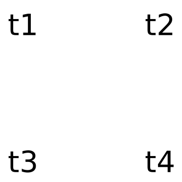
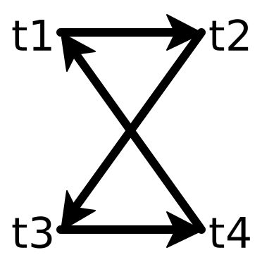

Minimizing Sets of Rewrite Rules: Sound and Unsound Approaches
1 Rewrite Rules
Many applications make use of rewrite rules: directed equalities over terms that can include forall-quantified variables. For example, a compiler might make use of this rule to optimize your code: r_1: \forall x, x*0 \rightarrow 0.
Combining rewrite rules can be a powerful way to simplify or optimize terms. Here’s a rule for commutativity of addition: r_2: \forall x, \forall y, x*y \rightarrow y*x. If we use it in sequence with the rule above, we can now prove that 0*x =_{r_2} x*0 =_{r_1} 0.
Rewrite rules are typically applied in a bottom-up way. We can represent a state as a set of grounded terms and equalities between them. For example, our initial state might be \{x*0\}, our initial program we want to optimize. We can then apply r_1 to this state, and get a new state, \{x*0, 0, x*0 = 0\}. The bottom-up evaluation also means that rewrite rules must be directed. For example, it’s impossible to apply r_1 in the reverse direction, because the left-hand side of the rule contains x, a variable not bound on the right-hand side.
2 Reducing Sets of Rewrite Rules
Ruler is a tool that automatically synthesizes a set of rewrite rules for a particular domain. The first thing it does is enumerate thousands or hundreds of thousands of rewrite rules, all of them valid for your domain. However, many of these rules are redundant- you can get the same effect using other rules. So it has to reduce this giant set of rewrite rules into something small and usable in other applications.
We would then know that the smaller subset of rules subsumes the original set. Let’s define this idea more formally. I’ll write R for a set of rewrite rules, and R_n(S) for applying R to a state S n times. Now, another ruleset R{}’ subsumes another ruleset R if, for any grounded equality we can prove with R, we can prove the same equality using R{}’. More formally,
\forall S, \forall n, (t = u) \in R_n(S) \implies
\exists m, (t = u) \in R{}’_m(S)
where S is an initial state and (t = u) is some grounded equality that we can prove with R.
So how are we going to reduce our set of rewrite rules? R{}’ is a subset of R, so we can try removing one rule r \in R at a time from R. Now, R{}’ subsumes R if it can subsume the single rule r. For some intuition why consider that any equality is derived from some sequence of rewrite rule applications starting from some initial term. Now, if R{}’ subsumes r, it means that under any situation it can do "the same thing" as r. So if at any point the derivation of an equality uses r, we can replace it with some use of rules in R{}’.
Now the problem becomes proving that R{}’ subsumes r. The cool trick that we will use is to actually insert the left-hand side of r into a database, and then apply R{}’ to it to try and derive r. But r has forall-quantified variables in it, so first we ground it, turning it into a term on fresh variables. For example, if we have a rule r: \forall x, x*0 \rightarrow 0, we ground the left-hand side, turning it into v*0, for some fresh name v. Now, for the initial database S = \{v*0\}, if for some n we have that (v*0 = 0) \in R{}’_n(S), then we know that R{}’ subsumes r. Intuitively, this is because we didn’t know anything about the variable v, so if we found that we can derive the right side of r from the left side, then for any v we will be able to do the same thing.
3 Ruler’s Unsound Algorithm
We saw in the last section that we can reduce a set of rewrite rules soundly by trying to remove each of the rules one by one. However, this is a very expensive process. Remember, Ruler generates hundreds of thousands of valid rewrite rules. For each of these rules, we need to run a full bottom-up procedure that tries to derive the right side of the rule. Even though it’s easily parallelizable, it’s still too expensive in many cases.
Ruler has a much faster, but unsound way to reduce a set of rewrite rules. Instead of starting with just one rewrite rule, it starts with a large set of them all at once. They also share common variables, getting a bunch of sharing. They then run a small set of (heuristically) selected rewrite rules, finding which rewrites can be derived. This is much faster because many rewrite rules can be derived at once, and there is a lot of sharing of state during the evaluation process.
r_1: \forall x, x*0 \rightarrow 0
r_3: \forall x, x*1 \rightarrow 1*x
r_4: \forall x, (x*1)*0 \rightarrow x
r_5: \forall x, x*1 \rightarrow x*0
Now, let’s try to derive r_4 and r_5 using r_1 and r_3. First, we ground r_4 and r_5, getting (v*1)*0 and v*1. Now, we apply our rules on the initial state S = \{(v*1)*0\}. And it turns out, we can derive both r_4 and r_5!
(v*1)*0 \rightarrow_{r_1} (v*1) \rightarrow_{r_3} v \rightarrow_{r_4} v
v*1 \leftarrow_{r_1} (v*1)*0 \rightarrow_{r_3} v*0
But wait a second... is r_5 really derivable from r_1 and r_3? Actually, no. If you start with v*1, there’s no way to introduce a 0 to get v*0. The reason the unsound algorithm above was able to derive it was that there was what I call a magic term in the initial state. Namely, (v*1)*0 was in the initial state because we were trying to derive another rule at the same time. The existence of that term allowed us to derive r_5. (If you know a better name for magic terms, terms that are used in a derivation that need to be introduced out of thin air, please let me know!)
It turns out that Ruler’s enumeration of rewrite rules, which tries to shrink the space of possible rules by using the existing ones, is also unsound in a similar way.
4 A Faster Sound Algorithm
Are we doomed to picking single rules from R and attempting to derive them? It seems like the trick that Ruler plays in batching many queries together won’t work. However, we might be able to do something similar, but soundly.
Suppose we are trying to derive a batch of rules R_d, whose left and right-hand sides ground to terms t_1, t_2, ..... Construct a graph that has a node for each term t_i, and initially contains no edges. We’ll start with a graph like this one:

Now, for each rule r \in R_d, try to derive it the slow and sound way. For each of the rewrite rules we are able to derive, add an edge from the left-hand side to the right-hand side. For example, we may end up with something like this:

Now, we automatically know that our ruleset also derives a rule whose left side is t_1 and right-hand side is t_3. This is because we derive t_1 \rightarrow t_2 and t_2 \rightarrow t_3, and so by transitivity we know that we derive t_1 \rightarrow t_3.
Pick a rule which connects to different strongly connected components.
Attempt to derive the rule using the sound method.
If the rule can be derived, add the edge to the directed graph of terms.
The algorithm I’ve described so far is to keep track of a directed graph of rewrites between ground terms. At each step, we have to run a bottom-up inference procedure where the state is a set of undirected equalities between ground terms. A particular bottom-up procedure for calculating these equalities is called equality saturation, which uses a e-graph data structure. But instead of having these two graphs, one directed and one undirected, what if we could do everything in the directed graph? This would allow us to get much more sharing in the rewrites we perform. My next blog post will be about a new data structure called a directed e-graph (or de-graph) that allows us to do this.